Matrix functions¶
Hermitian functions¶
Reform the matrix with the eigenvalues modified by a user-defined function. When the user-defined function is real-valued, the result will remain Hermitian, but when the function is complex-valued, the result is best characterized as normal.
When the user-defined function, say 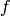, is analytic, we can say much
more about the result: if the eigenvalue decomposition of the
Hermitian matrix  is
is  , then
, then
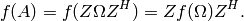
Two important special cases are 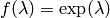 and 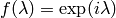, where the former results in a Hermitian matrix and the latter in a normal (in fact, unitary) matrix.
Note
Since Elemental currently depends on PMRRR for its tridiagonal eigensolver, only double-precision results are supported as of now.
- void RealHermitianFunction(UpperOrLower uplo, DistMatrix<F>& A, const RealFunctor& f)¶
Modifies the eigenvalues of the passed-in Hermitian matrix by replacing each eigenvalue 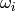 with 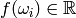. RealFunctor is any class which has the member function R operator()( R omega ) const. See examples/lapack-like/RealSymmetricFunction.cpp for an example usage.
- void ComplexHermitianFunction(UpperOrLower uplo, DistMatrix<Complex<R>>& A, const ComplexFunctor& f)¶
Modifies the eigenvalues of the passed-in complex Hermitian matrix by replacing each eigenvalue with 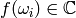. ComplexFunctor can be any class which has the member function Complex<R> operator()( R omega ) const. See examples/lapack-like/ComplexHermitianFunction.cpp for an example usage.
TODO: A version of ComplexHermitianFunction which begins with a real matrix
Pseudoinverse¶
- Pseudoinverse(DistMatrix<F>& A)¶
Computes the pseudoinverse of a general matrix through computing its SVD, modifying the singular values with the function
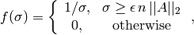
where
 is the relative machine precision,
is the relative machine precision,
 is the height of , and 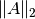 is the maximum
singular value.
is the height of , and 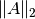 is the maximum
singular value.
- HermitianPseudoinverse(UpperOrLower uplo, DistMatrix<F>& A)¶
Computes the pseudoinverse of a Hermitian matrix through a customized version of RealHermitianFunction which used the eigenvalue mapping function
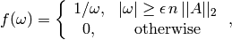
where
is the relative machine precision,
is the height of , and 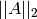 can be computed
as the maximum absolute value of the eigenvalues of .
Square root¶
A matrix 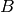 satisfying
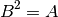
is referred to as the square-root of the matrix . Such a matrix
is guaranteed to exist as long as is diagonalizable: if
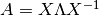, then we may put
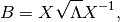
where each eigenvalue 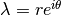 maps to 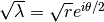.
- void HPSDSquareRoot(UpperOrLower uplo, DistMatrix<F>& A)¶
Hermitian matrices with non-negative eigenvalues have a natural matrix square root which remains Hermitian. This routine attempts to overwrite a matrix with its square root and throws a NonHPSDMatrixException if any sufficiently negative eigenvalues are computed.
TODO: HermitianSquareRoot
Semi-definite Cholesky¶
It is possible to compute the Cholesky factor of a Hermitian positive
semi-definite (HPSD) matrix through its eigenvalue decomposition, though it
is significantly more expensive than the HPD case: Let 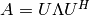
be the eigenvalue decomposition of , where all entries of
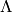 are non-negative. Then 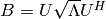 is the
matrix square root of , i.e., 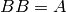, and it follows that the
QR and LQ factorizations of yield Cholesky factors of :
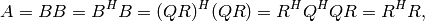
and
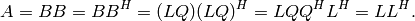
If is found to have eigenvalues less than 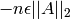,
then a NonHPSDMatrixException will be thrown.
- void HPSDCholesky(UpperOrLower uplo, DistMatrix<F>& A)¶
Overwrite the uplo triangle of the potentially singular matrix A with its Cholesky factor.